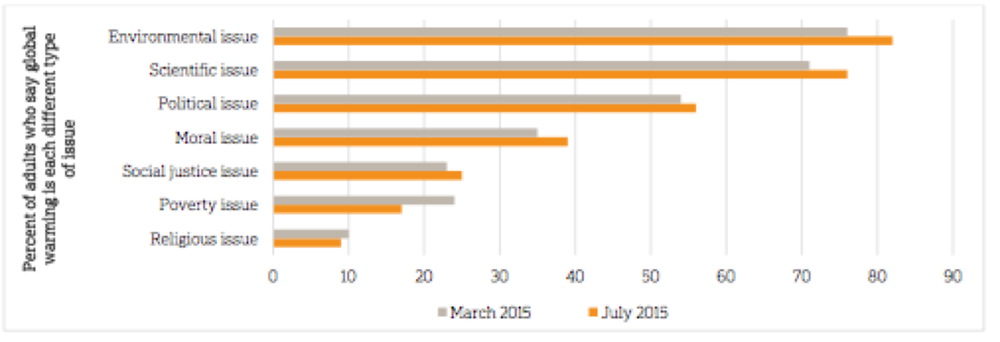
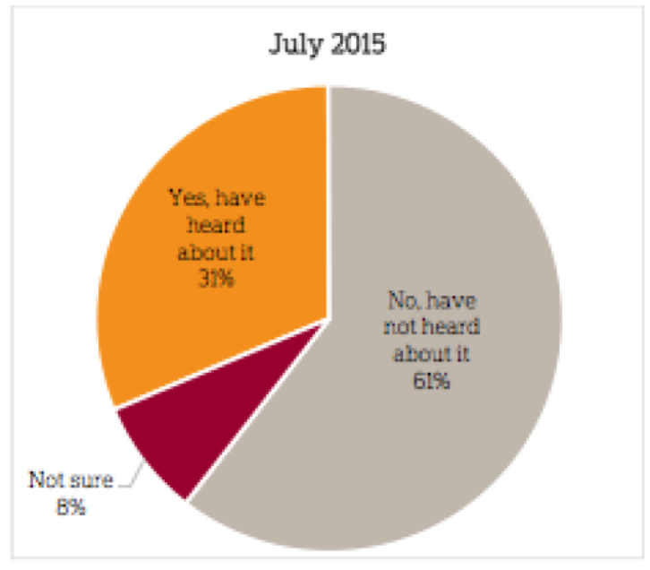
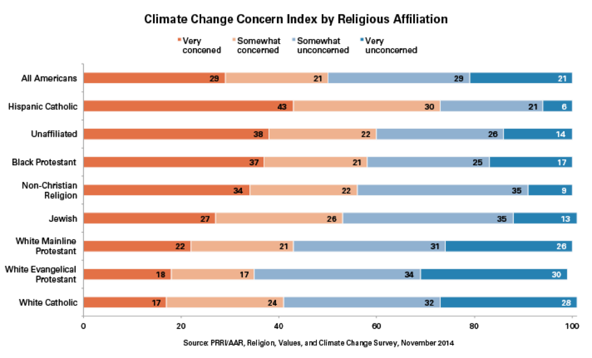
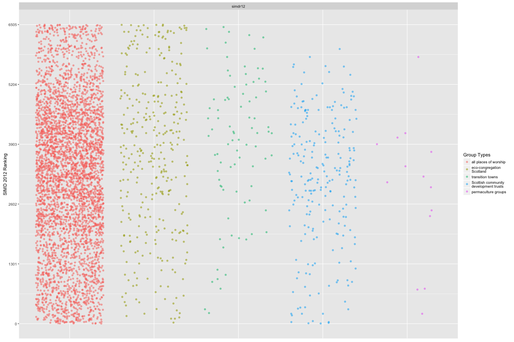
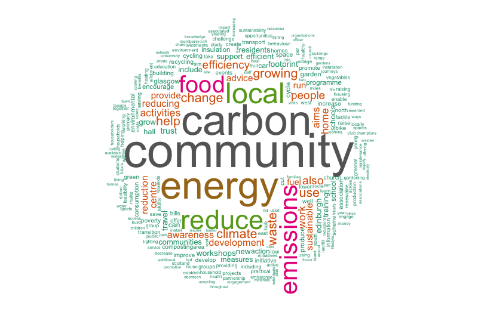

class: center, middle # Jeremy Kidwell ## University of Birmingham ### "Slow energy policy in a time of global emergencies: the perils and promises of energy policy and religious communities" 30 Jan 2018 Energy@Cambridge Good Energy Project .footnote[[j.kidwell@bham.ac.uk](mailto:j.kidwell@bham.ac.uk) [@kidwellj](https://twitter.com/kidwellj)] ??? Engineered to use remark: https://github.com/gnab/remark/wiki --- As a scholar one of my primary preoccupations is: What are we to do about climate change? --- As one of the most significant scientific collaborations in modern history, the [IPCC](https://en.wikipedia.org/wiki/Intergovernmental_Panel_on_Climate_Change) (Intergovernmental Panel on Climate Change) has been the source of some truly stunning achievements: - Working Group I Report, The Physical Science Basis - authored by 258 experts, includes 1,400,000 words, 2000+ pages, 9,200 citations. - Working Group II Report, Impacts, Adaptation and Vulnerability - 302 experts - Working Group III Report - 271 experts = 800+ experts (from 3000 nominations) That's a **lot** of experts! --- However, one consequence of the driving of climate change mitigation by scientists (and political scientists?) is that the framing of social interventions on climate change have been “decoupled from the social and political contexts of its material production and cognitive understanding” .red[*] .footnote[.red[*] Brace and Geoghegan, 2010 (see below for reference).] --- As a result policy solutions tend to be technocratic, value-free, etc. and fail to integrate the human cultures in which the drivers of climate change are incubated. There have been four interwoven attempts to address the "culture vacuum" surrounding climate change mitigation. --- (1) ### Scientists have begun to hone their skills in the dark arts of ".red[science communication]" --- (2) ### Since the 1990s, there has been an ongoing effort to re-integrate the [".red[human dimension]"](https://en.wikipedia.org/wiki/International_Human_Dimensions_Programme) in charting policy responses to environmental change. --- (3) ### Scholars like Brace and Geoghegan have argued for the inclusion of ".red[lay knowledge]" as part of the process of climate change research, policy design and execution. .red[*] This represents a change in research orientation: not starting with “what are you doing about climate change” but rather with “how are you experiencing climate change”? .footnote[.red[*] Catherine Brace and Hilary Geoghegan, “Human geographies of climate change: Landscape, temporality, and lay knowledges,” Progress in Human Geography 3 (2010): 284-302. https://doi.org/10.1177/0309132510376259. See also the recent article by Kaden, Jones, Catto, and Elsdon-Baker, "[Disentangling Lay and Professional Perspectives on Science and Religion](http://journals.sagepub.com/doi/pdf/10.1177/0008429817741448)"] --- (4) ### Political leaders have (more recently) begun to call directly on religious communities to express .red[moral leadership]: .left-column[ > "Saving the Earth and its peoples from dangerous climate change is an economic, social and environmental issue – and a moral and ethical one too that goes to the core of many if not all of the world's greatest faiths... Religious institutions need to find their voice and set their moral compass on one of the great humanitarian issues of our time” -UN Climate Chief Christiana Figueres (2014) ] .right-column[<img style="width:100%;margin-top:-1em;" src="https://upload.wikimedia.org/wikipedia/commons/thumb/9/91/Christiana_Figueres_Bonn_Climate_Change_Conference_May_2012_crop.jpg/440px-Christiana_Figueres_Bonn_Climate_Change_Conference_May_2012_crop.jpg">] --- .left-column[ ### Religious leaders have responded! - Pope Francis, Laudato si' (24 May 2015) - Islamic Declaration on Global Climate Change (August 2015) - For more: http://fore.yale.edu/climate-change/statements-from-world-religions/ ] .right-column[<img style="width:100%;margin-top:-1em;" src="https://upload.wikimedia.org/wikipedia/commons/thumb/4/4d/Franciscus_in_2015.jpg/453px-Franciscus_in_2015.jpg">] --- ...and political leaders have begun to acknowledge the importance of religious people to mitigation strategies. --- .footnote[From “Speaking Out on Global Warming: Public Attitudes toward the Papal Encyclical on Climate Change” by Associated Press-NORC Centre for Public Affairs Research. Available at: http://www.apnorc.org/projects/Pages/speaking-out-on-global-warming-public-attitudes-toward-the-papal-encyclical-on-climate-change.aspx ] ### I think we're forgetting about the grassroots and directing human energies inefficiently. The case in point is Laudato Si': .left-column[ ##### Views on global warming virtually unchanged (Laudato Si’ pub. May 2015)  ] .right-column[ ##### Have you heard of Laudato Si’?  ] --- .left-column[ Researchers have been studying how ordinary religious people relate to environmental issues since the 1970s. Most studies have focussed on the USA, functioned through survey instruments and have taken broadly national samples. [Click here for bibliography](http://ancestraltime.org.uk/empirical_re_biblio/) ] .right-column[] --- In spite of the earnest desire expressed by scientists and policymakers to engage with human culture and religion as a valid pathway to mitigate climate change, .red[strategies deployed to date have been underinflected]. This issue is made even more acute by the stated (but not financially underwritten) agenda in UK policy to devolve environmental (and other forms of governmental) action to "big society" at the community level. --- To achieve our policy goals on climate change mitigation we need more tailored policy instruments. This requires knowledge about: - how community-level groups function - whether religious ones are unique in any (positive) way - ...and what gaps exist between policy and practice. --- In my research, I conduct qualitative and quantitative research on community environmental groups, using ethnographic and digital geospatial tools. This work began in Scotland (2013-2017) where we convened a multidisciplinary team of philosophers, geographers, economists, theologians, etc. to explore all these dimensions as they existed among practitioner groups in the Eco-Congregation Scotland network. --- I am working now to expand and scale-up this work to include community groups in England and Wales in the [Eco-Church](https://ecochurch.arocha.org.uk) network and across Europe in the [Ecolise](http://www.ecolise.eu/members/) meta-network. --- In the time that remains today, I'm going to share a few case studies and some geospatial data in order to fill out our understanding of how community environmental groups function and share some largely unsubstantiated hints towards where I think policy gaps might be. --- It's worth opening this briefing with a high-level view of environmental action on the local community level in Scotland. .red[*] .footnote[.red[*] Note: If you're interested in more, you can read a very rough draft working paper (in R Markdown) here: https://github.com/kidwellj/mapping_environmental_action] --- There are hundreds of community environmental groups across the country. <iframe width="100%" height="520" frameborder="0" src="https://carto.mapping.community/user/mapcomm-admin/builder/98dbb620-75d3-11e7-8dd5-005056372088/embed" allowfullscreen webkitallowfullscreen mozallowfullscreen oallowfullscreen msallowfullscreen></iframe> .red[*] .footnote[.red[*] For more pretty maps re: community groups in the UK, see the production which has resulted from an ongoing geospatial collaboration with these groups hosted at http://mapping.community] --- These groups span urban and rural; deprived and less-than-deprived demographics. ---  --- <img style="width:100%;margin-top:-1em;" src="./atenergy_data/SIMD_boxplot.pdf"> --- To briskly summarise the social statistics - Eco-Congregations tend span a wider range of the Index of Multiple Deprivation than other types of non-religious groups. This is particularly the case if you focus in on the employment domain and the EST domain. --- In terms of qualitative ways of accounting for differences between religious and secular environmental community groups, the task is made more complex by: - Multiple identities / multiple involvements - Their tendency towards "modest witness" (see Kidwell et al, forthcoming 2018) Generally, I think it is unproductive to try and characterise Eco-Congregations on the basis of how they are (all) different from (all) their secular counterparts. --- The differences sharpen in particular situations, however: --- The primary (Scottish) policy instrument available to support sustainable energy interventions at the local community group level is the [Climate Challenge Fund](http://www.gov.scot/Topics/Environment/climatechange/howyoucanhelp/communities/ClimateChallengeFund) which is administrated by [Keep Scotland Beautiful](https://www.keepscotlandbeautiful.org/sustainability-climate-change/climate-challenge-fund/). This fund was the primary output of the groundbreaking Scottish Climate Bill in 2008. As their website suggests (as of round "21"), it has awarded £61 million of funding to 696 projects in 512 communities across Scotland since its launch in 2008. <div align="center"> <iframe src="https://www.keepscotlandbeautiful.org/sustainability-climate-change/climate-challenge-fund/ccf-in-action/funded-projects-map/" width="80%" height="800" frameborder="0" style="border:0" allowfullscreen></iframe> </div> You can see a video produced by the Scottish Government showcasing some projects here: https://www.youtube.com/watch?v=5lWKSXQgBs0 --- # Features of the CCF - Projects must be focussed on carbon metrics - Up to £150k - must be in Scotland and non-profit - Maximum period of two years --- ## Assessed against four criteria: 1. Community 2. Carbon Reduction > "The funded activity should lead to measurable carbon reductions, improve carbon literacy and help communities move to low carbon living." 3. Sustainable Legacy > "The project should deliver a low carbon legacy, with outcomes (activities and/or behaviours) that continue after the project is completed." 4. Improved climate literacy From: https://www.keepscotlandbeautiful.org/sustainability-climate-change/climate-challenge-fund/applying-for-ccf-funding/ccf-grants/ --- The first two criteria work in an uneasy dialectic. Can we really have metricised carbon reduction and community development?  .footnote[Word cloud based on CCF application text, you can look at the code and data set [on github](https://github.com/kidwellj/ccf_wordcloud).] --- Some interesting observations: - Eco-Congregations are vastly under-represented among grant-winners - Projects which have been funded are almost exclusively related to infrastructure (i.e. boiler replacements) - General takeaway - funding is lower than average; participation is generally homogenous - there is room for improvement. --- Specific features of Christian Eco-Congregation groups - Modest witness - Community focussed (cf. Kidwell et al., 2018 and also ___) - Though they can "talk the talk" (i.e. carbon metrics) action is usually embedded within worldview; motivated by concerns for social justice, embedded in worship, prayer, etc. - Best offer towards climate change mitigation is NOT improvement of basic infrastructure - The work in Congregations needs long planning horizons; in part because of community-development orientation - Possible benefit may be uniquely sustainable = embedded within existing social infrastructure --- ## Unqualified recommendations - Engage on the level of local values; the need for user engagement is not satiated by "messaging" - Create funding schemes which can work out over long time frames - Support community anchors as "beacon" projects; invest in established projects to leverage as support agents for new projects ## Calibrate expectations of community-level groups to match SME investment expectations - Expect failure (Startup failure rate > 90%). Can we fund blue-sky ambitious projects? - Compare time to ROI for SMB; adjust funding horizons for project maturation and delivery - Deliverable should be customer focussed ("climate justice" local services, etc.) not investor focussed ("carbon metrics") ---